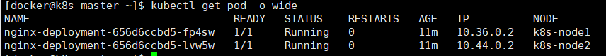
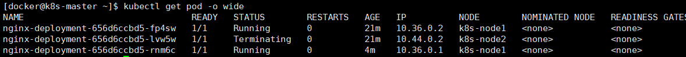

运行应用
#了解更详细信息
kubectl describe deployment <imageName>
#查看副本信息
kubectl get replicaset -o wide
kubectl describe replicaset
#查看副本Pod
kubectl get pod
kubectl describe pod
1.用户通过Kubectl创建Deployment
2.Deployment创建ReplicaSet
3.ReplicaSet创建Pod
副本对象命名:父对象名字+随机字符串或数字
deployment
命令 VS 配置文件
两种创建资源方式
1.kubectl命令直接创建，在命令行通过参数指定资源的属性
简单、直观、快捷、上手快。适合临时测试或实验
kubectl run nginx-deployment --image=nginx:1.7.9 --replicas=2
2.通过配置文件和kubectl apply创建
配置文件描述了应用最终要达到的状态
配置文件提供了创建资源的模板，能重复部署
可以像管理代码一样管理部署
适合正式、跨环境、规模化部署
kubectl apply -f xxx.yml
资源格式为YAML
#当前配置格式的版本
apiVersion: extensions/v1beta1
#要创建的资源类型
kind: Deployment
#该资源的元数据
metadata:
#必需的元数据项
name: nginx-deployment
#该Deployment的规格说明
spec:
#副本数量，默认1
replicas: 2
#定义Pod模板，重要
template:
#Pod元数据，至少要定义一个label
metadata:
labels:
app: web_server
#描述Pod规格，此部分定义Pod中每一个容器的属性，name和image是必须的
spec:
containers:
- name: nginx
image: nginx:1.7.9
删除资源
kubectl delete deployment nginx-deployment
kubectl delete -f nginx.yml
伸缩
在线增加或减少Pod副本数
修改配置文件副本数,可控制增删副本数（少增多删）
新建副本被创建并调度node1和node2上
默认配置下K8S不会将Pod调度到Master节点
#设置Master作为Pod
kubectl taint node k8s-master node-role.kubernetes.io/master-
#恢复Master Only状态
kubectl taint node k8s-master node-role.kubernetes.io/master="":NoSchedule
Failover

模拟故障，关闭Node2
halt -h
K8S检测到node2不可用，自动调度到node1,维持副本数，node2恢复后，Unknown的Pod会被删除，但不会重新调度。

label控制Pod位置
默认情况下，Scheduler会将Pod调度到所有可用的Node,不过有些时候想要将Pod部署到指定的Node
label是Key-value对，各种资源都可以设置label，灵活添加自定义属性
#例：标注node是配置了SSD的节点
kubectl label node k8s-node1 disktype=ssd
#查看节点的label
kubectl get node --show-labels
指定将Pod部署到k8s-node1，编辑nginx.yml,修改内容如下
#描述Pod规格，此部分定义Pod中每一个容器的属性，name和image是必须的
spec:
containers:
- name: nginx
image: nginx:1.7.9
#指定将此Pod部署到具有label disktype=ssd的Node上
nodeSelector:
disktype: ssd
部署Deployment并查看Pod的运行节点，查看副本是否全部运行在node1上
kubectl appl -f nginx.yml
kuberctl get pod -o wide
删除label disktype
kubectl label node k8s-node1 disktype- #-即删除意思
kubectl get node --show-labels###
此时Pod不会重新部署，除非删除yml中的nodeSelector,且通过kubectl apply重新部署
DaemonSet
Deployment部署的副本Pod会分布在各个Node上，每个Node都可能运行好几个副本。
DaemonSet不同之处在于每个Node最多运行一个副本
适用场景
1.在集群的每个节点上运行存储Daemon
2.在每个节点上运行日志收集Daemon
3.在每个节点上运行监控Daemon
K8s自己就用DaemonSet运行系统组件
kubectl get daemonset --namespace=kube-system
kube-flannel和kube-proxy分别负责在每个节点上运行。
必须指定--namespace=kube-system，表示系统组件，否则返回默认namespace default资源
kube-flannel
kube-proxy
无法拿到yaml文件，通过下面命令查看配置
kubectl edit daemonset kube-proxy --namespace=kube-system
运行自己的Daemonset
Job
容器按持续运行时间可分为两类：
服务类容器
持续提供服务 ，需要一直运行
工作类容器
一次性任务
kubectl get job
#Pod执行完毕后会自动退出，因此需要加上--show-all查看Completed状态的Pod
kubectl get pod --show-all
#查看Pob标准输出
kubectl logs PodName
#查看某个Pod启动日志
kubectl describe pod
YAML文件注意点
restartPolicy:Never/OnFailure
Job并行性
Yaml添加
#并行数
parallelism:2
#设置总共完成数
completions:6
不指定默认1
定时Job
CronJob
apiVersion: batch/v2alpha1
kind: CronJob
metadata:
name: hello
spec:
schedule: cron表达式
jobTemplate:
spec:
template:
spec:
containers:
name: hello
image: busybox
command: ["echo","hello k8s job"]
restartPolicy: OnFailure
第一次kubectl apply -f cronjob.yml肯定失败：
K8S默认没有enable CronJob功能，需要在kube-apiserver加入功能，需要修改kube-apiserver配置文件
/etc/kubernetes/manifests/kube-apiserver.yaml
启动参数中加上--runtime-config=apiVersion=true即可，重启kubelet服务
systemctl restart kubelet.service
kubelet会重启kube-apiserver Pod
#确认kube-apiserver支持apiVersion
kubectl api-versions
#查看CronJob状态
kubectl get cronjob
#查看job
kubectl get jobs